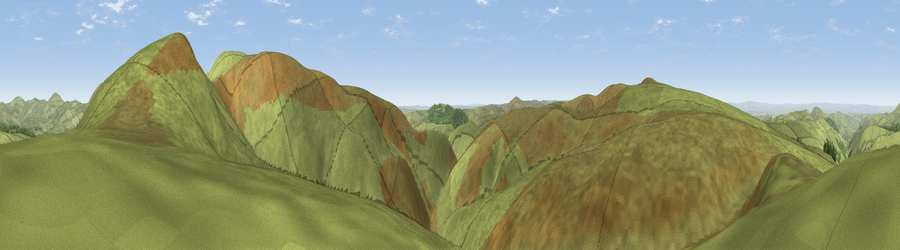

Viewpoint c12304_7680
#13040 in England · top 42% of its area beats it · —Where it is
The exact computed spot (NT 84025 15225). Click the marker for map links.
The view, rendered

A 360° render of this exact spot computed from the terrain model, tree cover and land cover — summer colours, afternoon light, calibrated against photographs of famous viewpoints. Real trees, hedges and buildings will differ in detail.
The panorama
Grey silhouette: terrain skyline in each direction (720 bearings, Earth curvature and refraction included). Dashed green: skyline with trees (+15 m) and buildings (+8 m) as obstacles. Blue strip: how far the ground is visible on each bearing.
Where the view opens
Wedge length = distance to the farthest visible ground on that bearing (vegetation-aware). Rings at 10, 25 and 50 km.
What fills the view
98% grassland · 1% woodland
Angular shares of the visible panorama (visual magnitude), not map area. Landscape diversity 0.04 (0–1 Shannon).
Key numbers
More beautiful places nearby
The staircase of upgrades: each row has a higher view potential than everything closer. Driving times are estimates from straight-line distance, calibrated against real road routing — check an actual route before setting out.
| Place | Direction | Drive | Score |
|---|---|---|---|
| Viewpoint c12307_7689 | ENE · 1 km | ~2 min | 73.7 |
| Mozie Law | W · 1 km | ~3 min | 76.0 |
| Windy Gyle | E · 2 km | ~4 min | 79.7 |
| Viewpoint c12386_7791 | NE · 7 km | ~14 min | 80.8 |
| The Schil | NNE · 8 km | ~16 min | 81.0 |
| West Hill | NE · 8 km | ~16 min | 81.3 |
| Viewpoint c12273_7856 | E · 9 km | ~18 min | 83.7 |
| Viewpoint c12396_7887 | ENE · 12 km | ~22 min | 85.7 |
55.43066, -2.25399 · source: screening · position refined by local search. Computed location — check access rights before visiting.